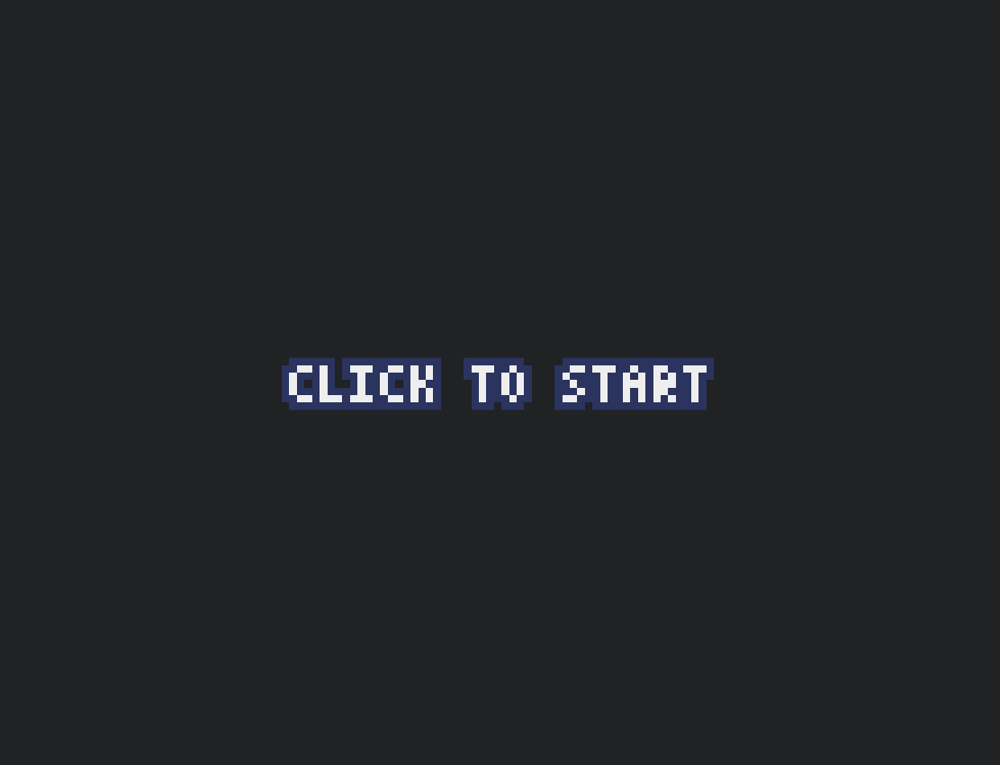
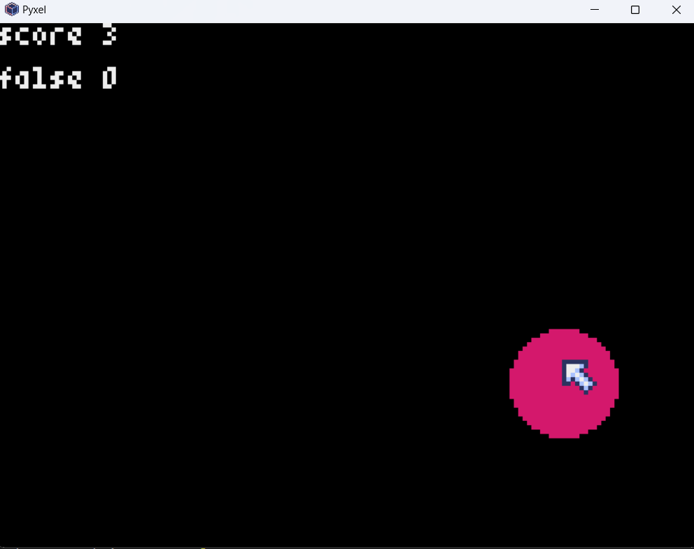
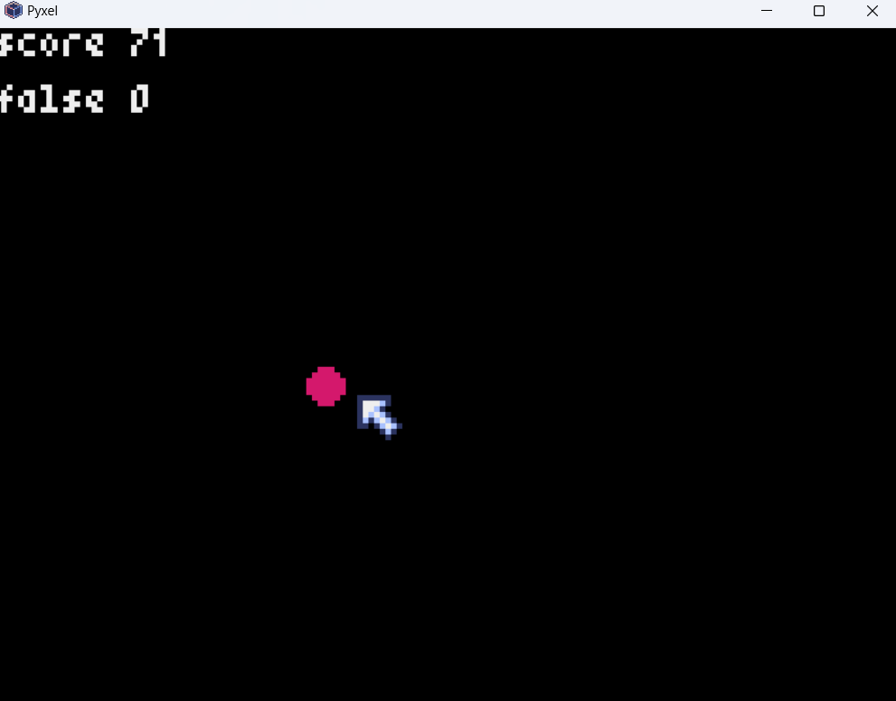
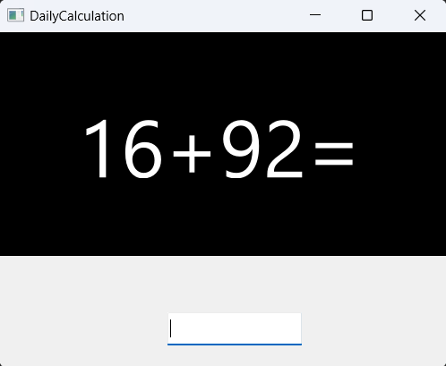
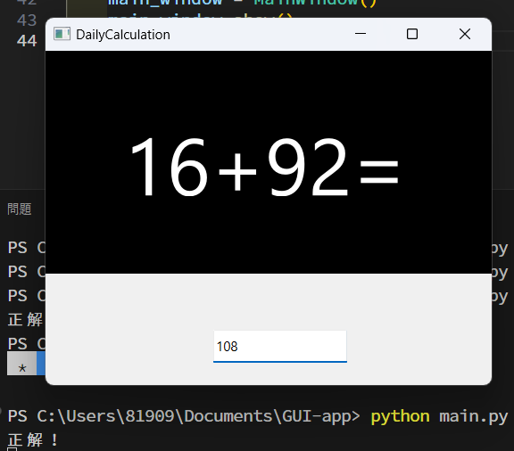
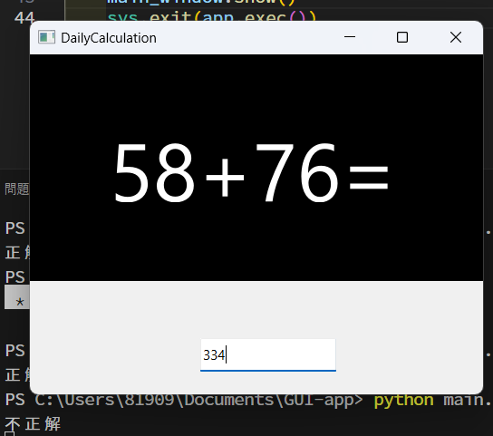

公大高専2年(17歳)
League of Legendsというゲームが好きです
python
html
css
なし
VScode
Git/Github
ArduinoIDE
Deeds-DCS
Tinkercad
WSL
TeraTerm
Wireshark
Cisco Packet Tracer
二年生の時にHTMLとCSSの一部を担当した落ちものゲーム 6人のメンバーで製作しました
fpsゲームに熱中していた時によくエイムを鍛えるのに使っていたソフトに似せて作りました
だんだん小さくなる円をクリックし、集中力とクリック精度を試すゲームです
数十回ごとに円が小さくなっていき、スコア70で最小になります
ゲームエンジンにはpyxelというものを使用しました
日本人の方が開発したエンジンで、ゲーム開発がとてもしやすいエンジンです
BGMやドット画像、背景もコマンドから作成でき、レトロゲームなどの作成に向いています



簡単な1～2桁の足し算をランダムに表示してくれるプログラムを作成しました
Pysideを使用して、およそ6時間半ほどで作成しました
1～99までのランダムな数字二つの計算を表示してくれます
ターミナルから「python main.py」を入力することで起動できます
入力した数字が正解しているかどうかは、ターミナルにかえってきます
現段階では、一問ごとにウィンドウを閉じなければならないので、
その部分の改善や、足し算以外の計算問題も出題できるようにしていくつもりです



My Github→ https://github.com/azuma444